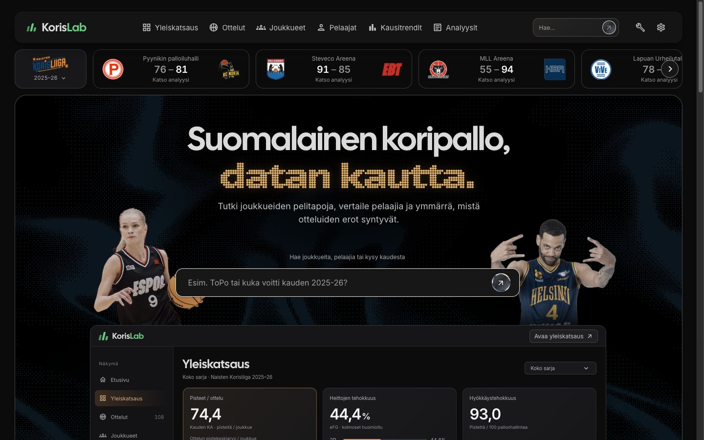
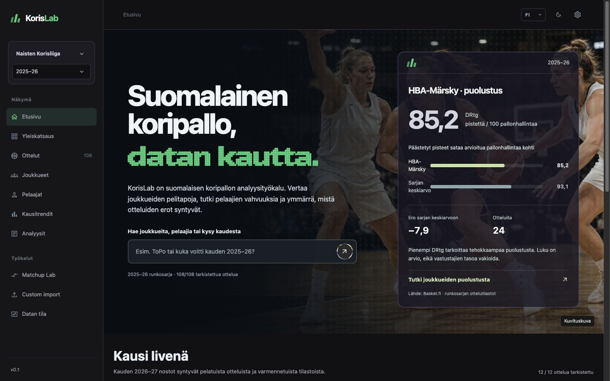
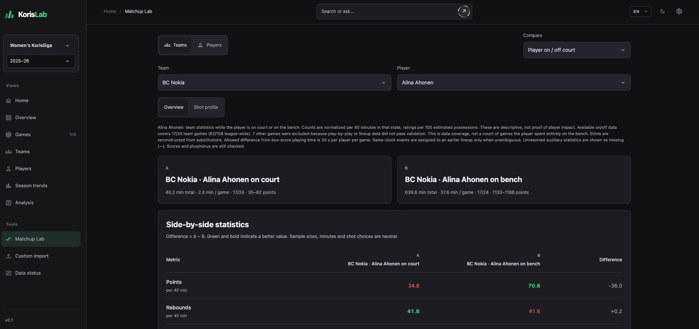
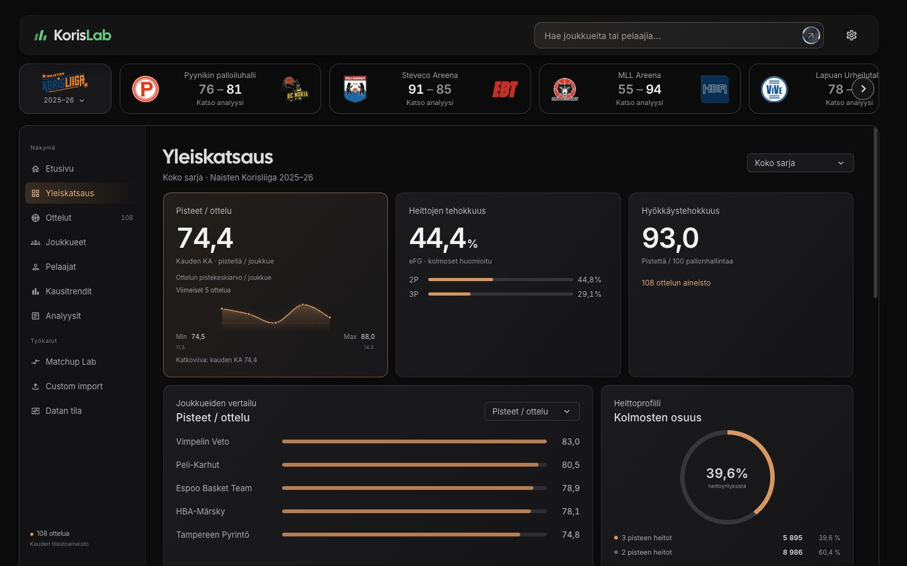
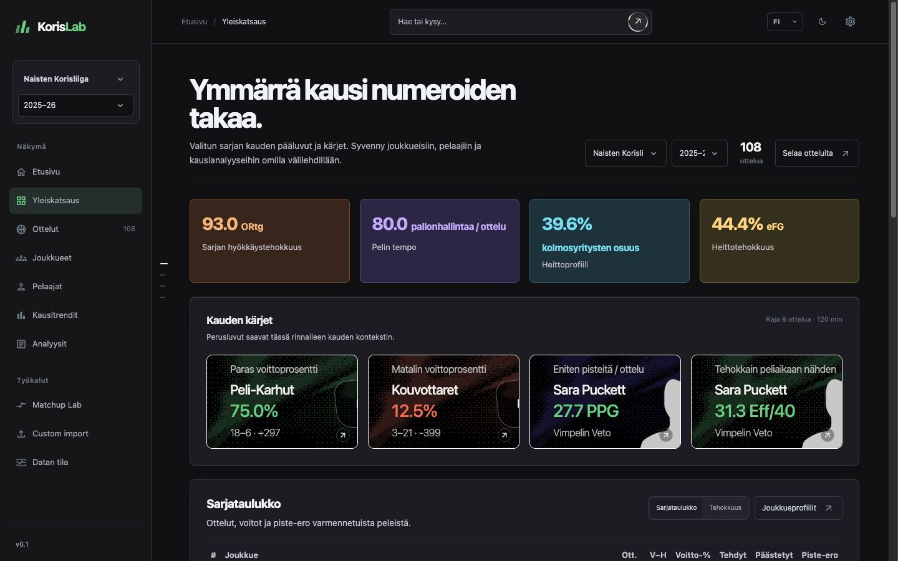
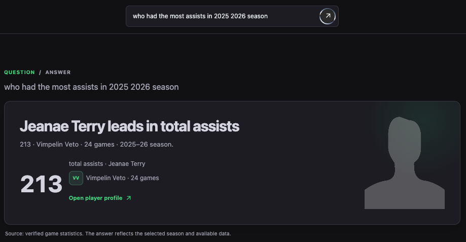

KorisLab 2026
A clearer identity for Finnish basketball data.
I designed and built KorisLab to explore the men’s and women’s Korisliiga. The next iteration brings a more distinctive identity, clearer visual hierarchy and richer data visualisation to the existing product.
- My role
- Brand & product design, interface development & analytics


The data had more depth than the interface showed.
The first version enabled comparison across games, but its generic visual language and competing highlights made the analysis harder to read.
Identity, hierarchy and a working interface.
I designed the brand and interface, created a first design system in Paper and code, and worked with a coding agent to implement it. I also redesigned charts and comparisons and brought the interactive overview onto the home page.
Working redesign, migration pending.
The redesign is being prepared alongside the live product. KorisLab covers both leagues from 2024–25 onward, mainly using Basket.fi data; coverage varies by tool.
A visual language built around the data
I replaced competing card colours with a clearer hierarchy: green carries the brand, orange guides data comparisons, and typography separates headline figures from units and supporting context. Dither and player imagery give the home page its own character while charts stay restrained.
A first design system for working with an agent
I created the first version of KorisLab’s design system, with tokens and components in Paper and corresponding definitions in code. Paper MCP lets the coding agent inspect my designs, giving us a shared reference for implementation.
Let visitors try the product from the home page
The dashboard preview is a working interface: charts respond to hover and links lead into the data views. It shares the overview component with the full application, connecting the introduction to the actual product.
Begin with a basketball question
Search finds teams and players, and answers supported season questions with a route into the relevant profile. My aim is to let people start with what they want to know, without first learning the navigation.
Show what the comparison can support
In this on/off-court example, seven of 24 games failed data validation. Ahonen’s on-court sample averages about 2.4 minutes per game. The scoring rates are normalised per 40 minutes; their roughly twofold difference cannot establish her effect on scoring. Short stints can also include garbage time, which requires checking the game situation.

Make the analysis easier to find
Page-specific metadata, canonical URLs and a sitemap support discovery. Pre-rendered player and verified-game summaries, source links and structured data make content readable before JavaScript runs. Additional data sources and computer vision are future avenues.
Give KorisLab an identity of its own
The first interface felt too much like a generic AI-generated dashboard. Bright metric cards and textured highlights competed for attention, while the depth of the analysis was less visible. I wanted a visual language that belonged to KorisLab and made the data easier to read.
I kept green as the brand colour and gave orange a consistent role in charts and active navigation. Dark surfaces, a tighter type hierarchy and quieter supporting labels let the important figures lead. On the home page, dither, dot typography and player cutouts connect basketball with data.
Move from isolated figures to readable comparisons
I put the main value, its unit and its context into a clear reading order. A scoring average now sits with recent-game values and a season baseline; shooting efficiency breaks down into comparable bars. Team comparisons share an axis so differences can be read visually.


Build a shared design system for working with an agent
I created the first version of KorisLab’s design system to make collaboration with a coding agent easier. It includes design tokens and reusable components in Paper, with corresponding tokens and components in the application code.
Through Paper MCP, the agent can inspect my designs and use them as a reference when implementing the interface. The system makes my design decisions explicit and gives the agent a consistent foundation to work from across views.
I direct the design, guide the implementation and review the resulting interface in the browser. This first version provides a foundation to extend as KorisLab develops.
Bring the working product into the introduction
The home page leads from the basketball identity to search and then into the dashboard. The preview uses the same interactive overview component as the full application, with hover details and links into the relevant views. Visitors can begin exploring before opening the full dashboard.
This iteration is working locally and has not yet replaced the live site. The comparisons document the design changes; usability and discovery gains have not yet been measured.
Build the comparison experience I wanted
I enjoy basketball and comparing teams and players. As my interest in analytics grew, a single box score felt insufficient, and I could not find the comparison experience I wanted. I built KorisLab to connect season overviews, profiles, match statistics and analysis.
I want Finnish basketball to receive more attention. The depth of NBA analysis inspired me to explore a smaller-scale version for Korisliiga, with fans, commentators, coaches and players in mind.
Let a question lead into the data
I want people to begin with a basketball question without having to know which analysis view contains the answer. I made search a starting point for supported season questions alongside team and player lookup. Asking who led the 2025–26 season in assists returns the player, total and a profile link, tied to the selected season and available data.

The answer gives users a starting point and a next step into the underlying detail. I want to expand the range of questions over time, returning an answer, opening a relevant view or combining both.
Give each comparison the context it needs
Matchup Lab compares team statistics with a player on court and on the bench, using side-by-side metrics and shot profiles.
My design priority: make the context needed to read the comparison visible beside the figures. A striking difference needs its sample size, playing time and calculation method.
- Coverage: this BC Nokia example includes 17 of 24 games. Seven were excluded because play-by-play or lineup data did not pass validation.
- Playing time: Ahonen’s on-court state averages about 2.4 minutes per covered game, versus 37.6 on the bench.
- Calculation: the displayed rates are normalised per 40 minutes, so a small sample can produce a large apparent difference.
The roughly twofold scoring-rate difference does not establish that Ahonen caused lower scoring. Short stints can include garbage time, when a game is effectively decided. That is context to investigate, not a confirmed explanation for her minutes. Minutes, coverage and calculation notes help users judge the comparison.
Make the content discoverable beyond the app
I added concrete foundations for search-engine and AI-search discovery:
- Metadata and canonical URLs: titles and descriptions identify league, season and content; chart filters point to the underlying game.
- A generated sitemap: covers public views, profiles, verified games and analysis articles.
- Pre-rendered summaries: player and verified-game HTML includes statistics and source links before JavaScript runs, with Schema.org ProfilePage and SportsEvent data. Public pages allow OpenAI’s search crawler.
Extend the data before extending the claims
The current product mainly uses Basket.fi statistics and distinguishes verified figures from calculated estimates. Validation remains ongoing, and not every game is available to every tool.
I have emailed the Finnish Basketball Association to ask about further data availability and am awaiting a response. Longer term, I want to explore computer vision for more detailed game data. That is a future direction, not part of the current analytics.